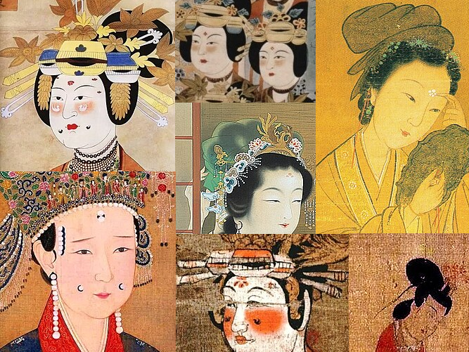
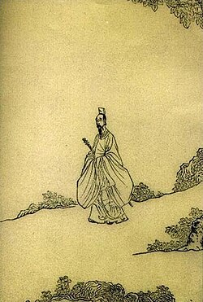
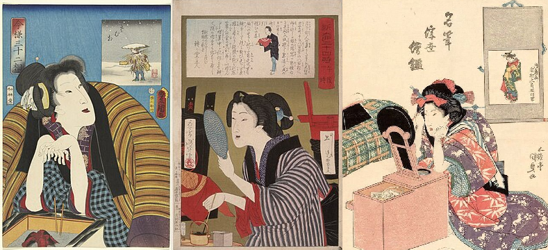
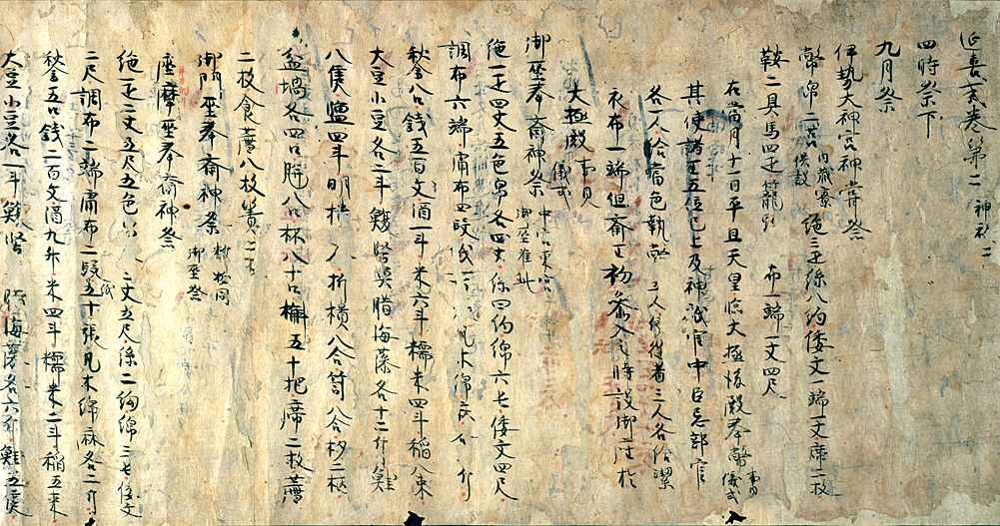
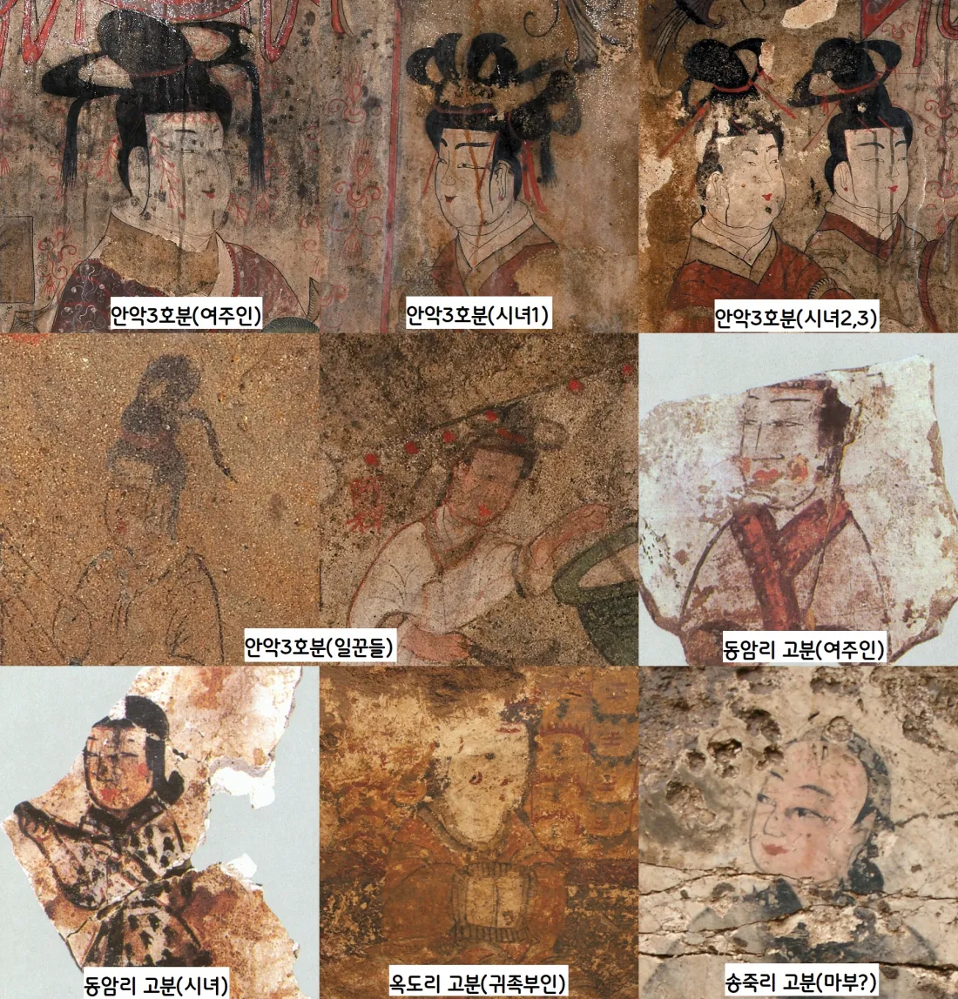
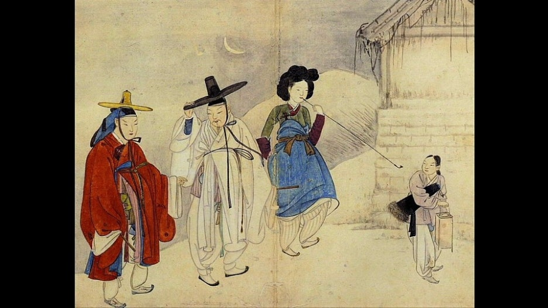
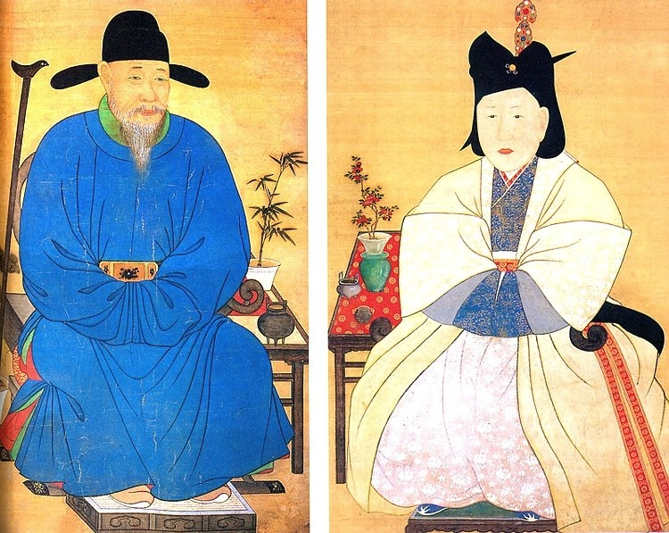
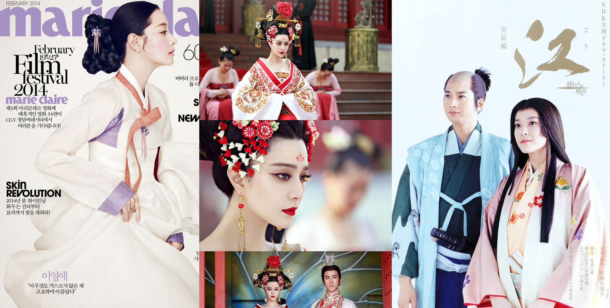

위 그림들은 중국 남북조, 당나라, 오대 십국
송나라까지 시대의 여인들을 그린 초상화임.
위 그림 속 여인들의 모습을 보면 복식이나
그림체가 상당히 다양한데 유일한 공통점은
이마에 화전(Huadian)이라는 꽃을 그려넣고
얼굴을 새하얗게 분칠했다는 점만이 동일함.
연구에 따르면 진나라, 한나라 시절까지 거슬러
올라가도 이러한 백장, 홍장 특징을 보인다고 함.

전국시대 초나라 시인 굴원(기원전 343~278)
이 남긴 시가 작품집인 '초사'의 한 구절만 봐도
백분 바른 얼굴, 검게 그림을 그린 눈썹에서
아름다운 향기가 나고 윤기가 흐른다고 씀.

위 그림은 10세기 헤이안 시대부터
19세기 후반 에도시대까지 이어진
오하구로(お歯黒) 풍습에 관한 그림임.
치아를 철가루랑 식초로 검게 물들이는
화장법이 수백년 간 유행했는데 그림만
봐도 알 수 있듯 전부 다 피부가 창백함.

일본은 나라 시대 쯤 하얀 분이 보급되었는데
헤이안 중기에 편찬된 3대 격식 중 하나이면서
율령의 시행 세칙을 법전인 엔기시키에 따르면
궁정 여인들 얼굴을 하얗게 칠하는 백분료의
가격이 무려 쌀 한가마 다섯말이나 되었다는
기록이 있는데 이런 어마어마한 가격에도
불구하고 민간계층까지 퍼졌다는 기록이 있음.
에도 후기에 유행한 滑稽本이란 책을 보면
色の白いは七難隠す라는 말이 나오는데
여인이 피부가 하야면 머리, 얼굴, 성격
등 일곱가지 결점을 가릴 수 있다는 뜻임.
메이지시절에는 하얀 피부에 집착하다가
하도 납을 많이 처발라서 납 중독사가 흔했고
그 탓에 대체제로 무연백분이 유행하기도 했음.

한국도 흰 피부에 집착한 건 마찬가지인데
황북 연탄군 송죽리 벽화분 여자 마부나
평남 순천 동암리 고분에서 출토된 시녀
북한 국보 제67호인 고구려 안악 3호분 속
귀족들이나 일꾼들의 모습만 봐도 공통점은
신분을 가리지 않고 얼굴에 흰 분을 바르고
볼에 곤지를 찍어서 색조화장을 했다고 함.


흰 피부에 붉은 볼 터치를 선호하는 화장법은
신라, 고려, 조선시대 후기까지 쭉 이어졌는데
위 야금모행(신윤복)이나 문효공과정경부인영정
만 봐도 남성의 얼굴 색에 비해서 여성의 얼굴이
하얀 분칠을 해서 훨씬 더 하얀 것을 볼 수 있음.
고려나 조선쯤가면 짙은 색조 화장은 기생 등이
하는 야한 화장으로 취급하고 여염집 부녀자의 경우
(여염집 = 평범한 가정) 하얗게 분칠하고 엷은 색조만
넣는 방식으로 이원화하는 고정관념이 생기는데
조선의 경우 궁중여인을 비롯한 사대부 여인들은
화장을 너무 과하게 해서 화장한 후의 얼굴이
본래 생김새랑 너무 차이가 큰 것을 야용(冶容)
이라고 하면서 크게 경멸해서 흰 분칠 위주로만 함.

그러니까 요약하자면 동북아 한중일에서 흰 피부에
집착하기 시작한 건 최소한 천년이 넘었다는 거임.
그러니 무슨 서양에 영향 받아서 흰 피부를
선호한다는 둥 화이트 워싱, 백인 선망이라고
말하는 다른 인종들이나 페미 등의 주장은
인종, 문화 차별적인 개소리에 지나지 않음.
그리고 지 나라 역사도 몰라서 이런 한심한
주장을 하는 한국인이 있다는게 제일 안타까움.
옛날부터 미녀를 묘사할때 백옥같은 피부는 꼭 들어갔지
백인이라는게 지구에 존재하는지도 모를 때부터 흰 피부 좋아했는데